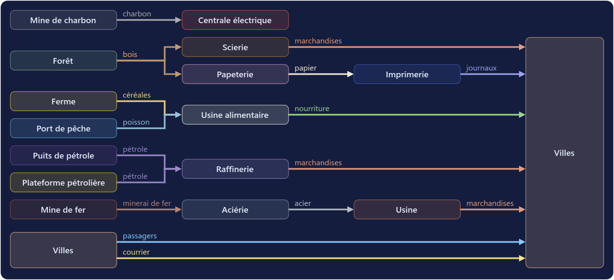
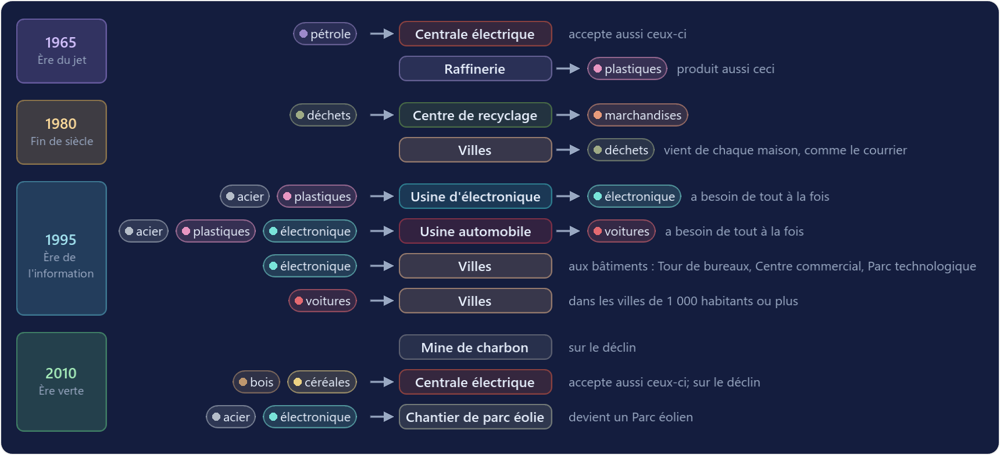

Chaînes industrielles
Qui va où.
Les matières premières vont à une usine qui les transforme en quelque chose que veulent les villes. Chaque flèche est une livraison payée : une chaîne complète rapporte donc plusieurs fois. Voici les chaînes d'une partie commencée en 1950 :


- Une usine transforme chaque unité livrée en à peu près une unité de produit, prête à être chargée quelques jours plus tard : plus avec tout le personnel, moins avec peu de travailleurs (voir Travailleurs).
- Le charbon finit à la centrale électrique : rien n'en sort.
- Le bois a deux clients : la scierie en fait des marchandises, la papeterie du papier pour l'imprimerie, qui se trouve près d'une des plus grandes villes.
- Les journaux sont périmés au bout de 2 jours, transporte-les vite : camions, autorails et avions postaux les prennent. Toute maison d'une ville de 150 habitants ou plus les accepte.
- De temps en temps, une industrie change sa production. Si la plupart de sa cargaison est transportée, ou si elle a beaucoup de personnel, elle a bien plus de chances de grandir que de diminuer.
- La Carte du monde (M) montre où chaque industrie de ta carte pourrait livrer.
Les époques changent les chaînes
Chaque nouvelle époque apporte de nouvelles industries et donne de nouvelles cargaisons aux anciennes. Un nouveau type d'industrie ouvre sur la carte au début de son époque (dans une partie commencée plus tard, il est là dès le début).


- Deux entrées : l'usine d'électronique a besoin d'acier et de plastiques ensemble. Elle garde ce que tu livres jusqu'à ce que l'autre arrive, et chaque tonne d'acier avec une tonne de plastiques donne environ deux caisses d'électronique.
- Les déchets viennent de chaque maison dans la zone de desserte d'une station, comme le courrier. Un centre de recyclage les transforme en marchandises.
- L'électronique paie bien mais se périme en quelques jours : camions rapides, trains ou avions-cargos.
- Trois entrées : l'usine automobile a besoin d'acier, de plastiques et d'électronique ensemble, et chaque lot d'un de chaque donne environ trois voitures. Sa fenêtre dit quelle entrée la freine.
- Les voitures paient bien mais sont encombrantes : seuls le Atlas Car Transporter et les wagons porte-voitures les transportent, 10 par wagon. Les villes de 1 000 habitants ou plus les acceptent.
- Les chantiers de parc éolien ont besoin de 1 000 tonnes de acier et de 600 caisses de électronique ; quand tout est livré, le chantier devient un parc éolien. Les villes à moins de 24 cases n'attendent plus alors que 80% du temps habituel entre deux poussées de croissance, et les entreprises qui ont livré se partagent jusqu'à +25 de note auprès de leurs conseils, selon ce que chacune a apporté.
Ouvertures et fermetures
- À quelques années d'intervalle, une nouvelle industrie ouvre, de n'importe quel type présent sur la carte : une mine, une ferme, une forêt, un puits, une plateforme ou un port là où il y a la place, une usine près des producteurs de ce qu'elle prend. Elle ne s'installe jamais sur quelque chose de construit.
- Quand une ère apporte un nouveau type d'industrie, il en ouvre une chaque mois jusqu'à ce que la carte en ait sa part.
- Une mine, une ferme ou un puits que personne n'a desservi depuis deux ans, et dont la production est tombée à 75% de l'habitude, peut se trouver en difficulté. Celles qui manquent de personnel sont touchées en premier.
- Les actualités préviennent un an avant la fermeture, et sa fenêtre et sa fiche disent quand. Transporte sa cargaison d'ici là et elle ne fermera pas.
- Les usines ne ferment jamais (sauf les centrales électriques, voir plus bas), ni la dernière industrie d'un type, si bien que chaque chaîne reste possible.
- Les industries sur le déclin n'ouvrent plus. À partir de 2010, une centrale électrique que personne n'a approvisionnée depuis deux ans peut elle aussi être en difficulté et fermer.
- Quand l'une ferme, les stations voisines cessent de fournir sa cargaison, et les rivaux abandonnent les lignes qui la desservaient. Une plateforme pétrolière emporte son port avec elle.
Ce que produit chaque industrie se trouve dans Tableau des industries.